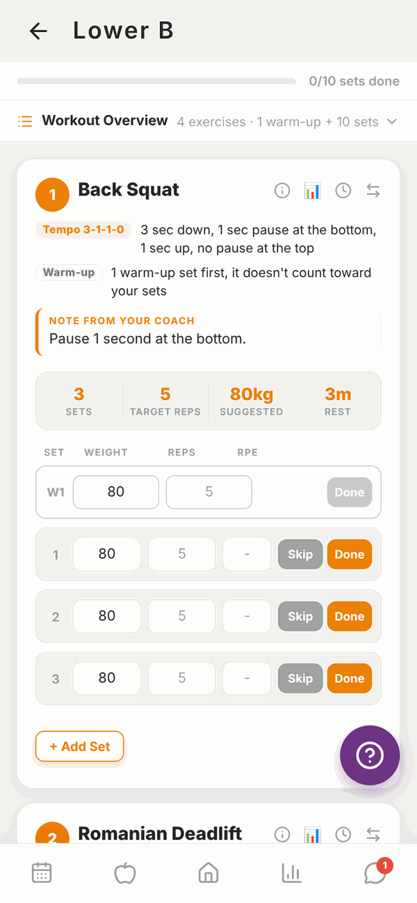
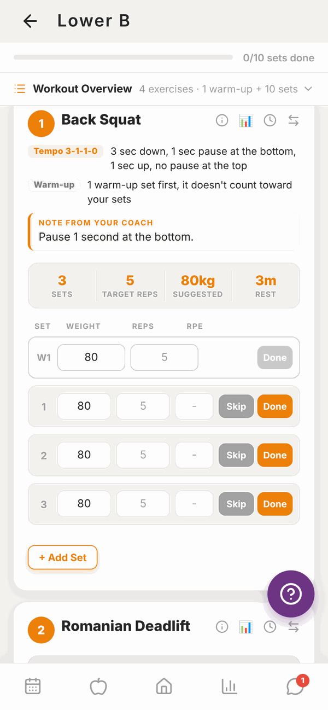
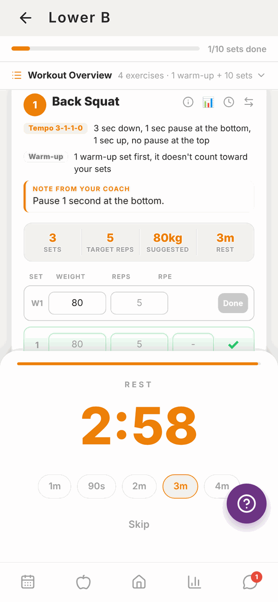
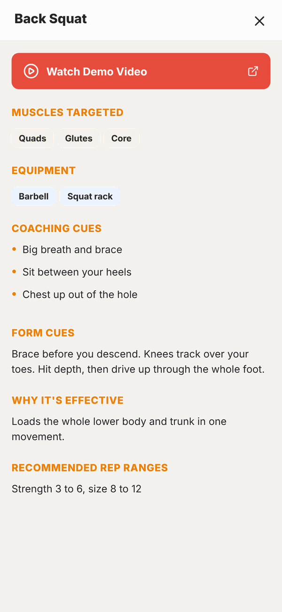
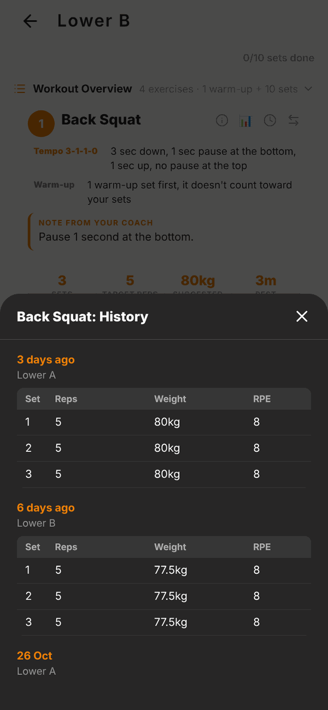
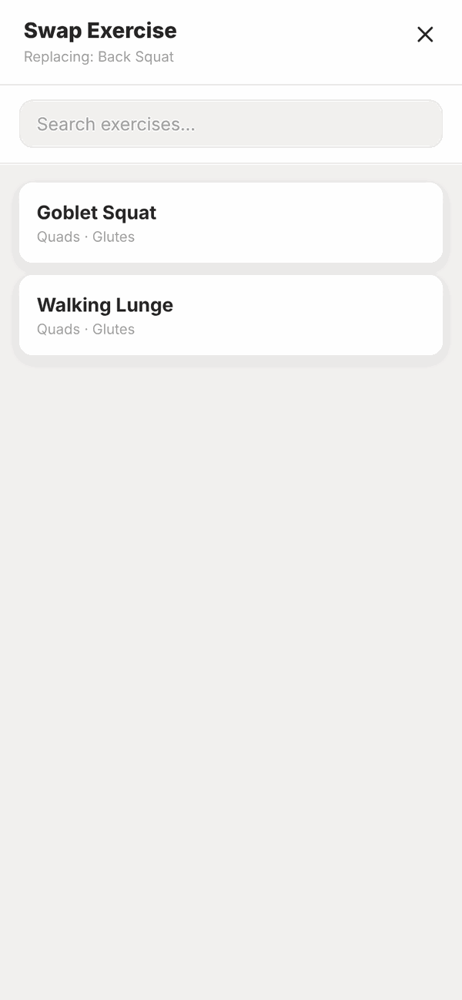
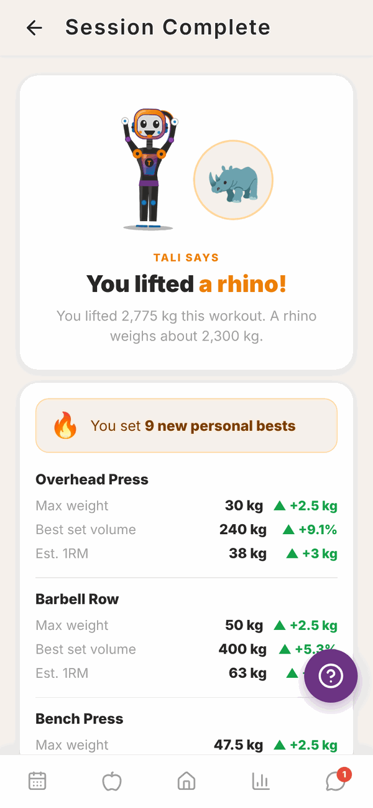

Totality for clients
Doing a workout
Start a workout, log your sets, reps and weights, use the rest timer, watch exercise videos, swap an exercise and finish the session.
This page walks you through a whole workout, from tapping Start to seeing your summary at the end.
Start a workout#
You can start a workout from three places:
- Home: tap Start Workout on Today's Workout.
- Calendar: tap the day, then Start Workout.
- Programmes: pick the week and tap Start Session → on any session.
The workout screen#

At the top:
- The workout name, with a back arrow to leave.
- A progress bar showing how many sets you've done, for example 0/10 sets done.
- Workout Overview. Tap it to see the whole list of exercises with their sets and reps before you start.
Below that, each exercise has its own card, in order. Each card shows:
- The exercise number and name.
- Small tags with instructions, for example Tempo, Warm-up, Per side, a set type like Superset or AMRAP, and a Note from your coach. Read these, they're from your trainer.
- Four boxes: Sets, Target reps (or Duration for timed exercises), Suggested weight and Rest time.
- A row for each set where you type what you did.
Log a set#
Each set has boxes for Weight, Reps and RPE. The weight box starts with your suggested weight already typed in. The reps box shows your target in grey. Change them to what you actually did.
- Do your set.
- Change the weight if you used something different, and type the reps you did. If you did exactly the target reps, you can leave the reps box empty and Totality saves the target.
- Type your RPE if you like (see below). It's optional.
- Tap Done. The set turns green with a tick, and the rest timer starts.


RPE means "rate of perceived exertion". It's a score out of 10 for how hard the set felt. 10 means you couldn't have done one more rep. 8 means you had about 2 reps left.
Skip marks a set you didn't do. Skipped sets aren't saved.
+ Add Set adds another set to that exercise if you did an extra one.
Warm-up sets#
If your trainer added warm-ups, they show first as W1, W2 and so on. Fill them in and tap Done the same way. Warm-ups don't count towards your working sets.
Left and right sides#
Exercises marked Per side (or L/R) have a separate row for your L (left) and R (right) side. Fill in both, then tap Done.
Timed exercises and bands#
- For a timed exercise like a plank, the column says Duration instead of reps. Tap the small play button on the set to start a countdown. AMRAP sets (as many reps as possible) have the same play button, and the reps column says REPS DONE.
- For a band exercise, tap Band ▾ and pick the band you used: X-Light, Light, Medium, Heavy, X-Heavy or XX-Heavy.
Supersets#
Exercises in a superset are joined by a coloured line with SUPERSET and a group number. Do them back to back, then rest.
The rest timer#
When you tap Done, a REST timer slides up and counts down from the rest time your trainer set.
- Tap 1m, 90s, 2m, 3m or 4m to change it.
- Tap Skip to close it early.
- You can also start it any time with the clock button on an exercise.
On the phone app, you'll get a Rest Complete notification when the time is up, even if you've switched to another app.
Exercise buttons#
Each exercise card has four small buttons next to its name:
| Button | What it does |
|---|---|
| i (info) | How to do the exercise: demo video, muscles, equipment, coaching cues and rep ranges |
| Chart | Your history for this exercise: every past session's sets, reps, weight and RPE |
| Clock | Starts the rest timer |
| Arrows | Swaps the exercise for this session only |


Watch the exercise video#
Tap the i button, then Watch Demo Video. Videos open in the app or on YouTube. If there's no video button, your trainer hasn't added one for that exercise yet.
Swap an exercise#
Machine taken? Sore shoulder? Swap the exercise for today only.
- Tap the arrows button on the exercise.
- Search or scroll the list. It shows exercises that work similar muscles.
- Tap the one you want.
- Confirm. The message says it's for this session only and your programme won't be changed.

The old name shows crossed out with the new one under it.
Suggested weights#
Sometimes you'll see a banner like 💡 Recommended: 82.5kg. That means your trainer has approved a change to your weight based on your recent sessions. Tap Why? to see the reason.
Finish the workout#
Scroll to the bottom. Once every set is either Done or Skipped, the button changes to Finish & Save Session ✓. Tap it.
Totality saves your workout and shows Session Complete.

The summary shows:
- Tali's celebration, comparing the total weight you lifted to something heavy (yes, really).
- Any new personal bests you set today.
- Your Completion percentage, average RPE, total Volume and Sets Done.
- An Exercise Breakdown with the sets and average RPE for each exercise.
Tap Done to go back to Home.
If the app closes mid-workout#
Nothing is lost. Totality keeps your workout on your phone as you go. Open the workout again and your sets are still there. It's only sent to your trainer when you tap Finish & Save Session ✓.
Questions#
The Finish button is grey and won't work.
Every set needs to be marked Done or Skip first. The button shows how many are done, for example "8/10 sets done". Scroll up and find the sets without a tick.
It says "Missing reps".
For AMRAP sets (as many reps as possible) and for the right side of a per side exercise, you must type the reps you did before tapping Done.
What if I can't finish all the sets?
Tap Skip on the sets you didn't do. Then you can finish and save the workout.
Does swapping an exercise change my programme?
No. A swap is for that one session only.
Can I log a workout that isn't in my programme?
Yes. Go to Workout History and tap Log a workout. See Workout history.
Will my trainer see my workout?
Yes, as soon as you tap Finish & Save Session ✓.
It says "Workout not available".
Check your internet and tap Try again. If it keeps happening, your trainer may have changed or removed that session. Go back and start it again from Home or Programmes.
I didn't get the rest timer notification.
Notifications only work in the phone app, and only if you allowed them. Check your phone's settings for Totality, and Push notifications in Totality's Settings.
Can I do the same workout twice?
Yes. Start it again from Programmes or the Calendar. Each time is saved separately.